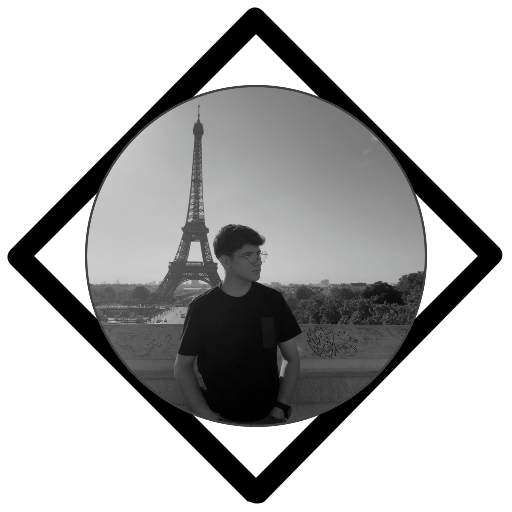

Welkom op mijn portfolio website!
Hoi! Ik ben Ikbal, een student aan ROC Mondriaan en ik volg de ICT Software opleiding. Ik ben gepassioneerd over technologie en softwareontwikkeling en leer graag nieuwe vaardigheden om mijn carrière verder te ontwikkelen.
Op deze website vind je alles over mij: mijn projecten, academische achtergrond, vaardigheden en professionele groei.
Voel je vrij om op elk moment contact met me op te nemen!